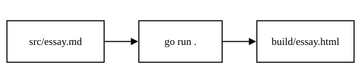

The Case for Small Tools
An essay that uses every feature of the converter
Contents
Why small tools
Most of the software I use is larger than my need for it.1 A tool that does one job is easier to read, easier to trust, and easier to throw away. It also weighs almost nothing: a page like this one comes to a few kilobytes, and a kilobyte is 210 bytes in the old convention.
The idea is older than most of the tools that follow it:
Write programs that do one thing and do it well. Write programs to work together.
There is also an older piece of advice about timing, which applies to software as much as to anything else:
1To every thing there is a season, and a time to every purpose under the heaven: 2A time to be born, and a time to die; a time to plant, and a time to pluck up that which is planted;
Build what the season needs. When it passes, build something else.
How it works
The converter looks through src/ for Markdown files. Each one becomes an index.html in its own folder, whatever the Markdown file is called, so essay/essay.md gives essay/index.html and the page lives at /essay/. The stylesheet sits at the root of src/, and a page's own scripts and images sit beside it. Nothing is copied, and nothing is ever deleted: the program only overwrites each index.html, so HTML you wrote by hand is left alone. It is three Go files, and the only dependency is goja, a JavaScript interpreter that runs KaTeX while the pages are built.
Reading the source
The parser walks the file line by line. Each line decides what kind of block it begins: a heading, a quote, a list, a fence, or, failing all of those, a paragraph. Inline markup is handled afterwards, one block at a time. Here is one of the smallest helpers, which decides whether a link counts as external:
func isExternal(href string) bool {
return strings.HasPrefix(href, "http://") ||
strings.HasPrefix(href, "https://")
}Only external links are affected by the -newtab flag. Links to your own sections always stay in the same tab.
Running it
From the project folder, one command writes the pages and starts a static server:
$ go run . -newtab
src/essay/essay.md -> src/essay/index.html
serving src on http://localhost:8080Open that address with /essay/ on the end. For hot reload while writing, run air instead and open port 8090.
Showing things
A figure
An image on a line of its own becomes a figure. The text in quotation marks after the path becomes the caption.

A canvas
A canvas block names an element and a script. The script lives in src/ beside the page and is loaded right after the canvas, so it can find the element by its id.
The script is plain JavaScript in src/canvas-demo.js. The converter never reads it.
Math
Math is written in TeX and drawn by KaTeX when the pages are built, so the finished page carries no JavaScript. Inline math sits between single dollar signs: the area of a circle is , and Euler's identity is . A closing dollar sign followed by a digit is not math, so prices like $5 or $10 stay as text, and \$ writes a literal dollar sign.
Display math goes between double dollar signs, on lines of its own:
It can run over several lines and use environments such as align*:
A page that contains math links to katex/katex.min.css at the root of src/, and the fonts sit beside it in katex/fonts/.
Links and notes
Links open in the same tab unless told otherwise. The Go documentation opens in a new tab because of the {new} flag after it. The regexp package follows the default, which is the same tab unless the page is built with -newtab. And a link back to the first section never leaves the page.
Superscripts such as 103 are written between carets. Footnotes are written as [^1], numbered in the order they are first cited, and gathered at the bottom of the page with a link back to the sentence that cited them.
Writing each piece
Everything above is written like this. The table of contents is a list you maintain by hand, wrapped in a toc block; add open to start it expanded.
::: toc open
- [A header](#a-header)
:::
## A header
### A sub-header
> A quote.
> — Its author
::: scripture Ecclesiastes 3:1–2
^1^To every thing there is a season…
:::

::: canvas
id=wave width=520 height=220
script=canvas-demo.js
:::
2^10^ is a superscript.[^1]
Inline math is $e^{i\pi} + 1 = 0$.
$$
\int_0^1 x^2\,dx = \tfrac{1}{3}
$$
[A link](https://example.com){new}
[Stay here](https://example.com){same}
[^1]: The text of the note.Code goes in an ordinary fence with a language after the opening backticks. Terminal output goes in a fence labelled terminal, where any line beginning with $ is drawn as a typed command. Math goes between dollar signs, as shown above.